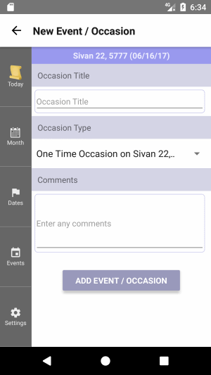
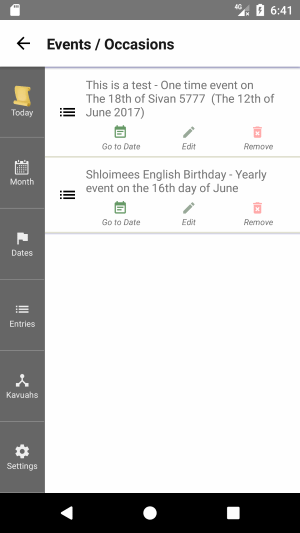

An Event is an event or occasion such as a birthday or Yartzeit.
Event Properties
Each Event has the following properties:
Event/Occasion Title
A short description caption of this event or occasion.
Keep it short as this is what will get shown for the event on
The Today Screen.
If you need a longer explanation, use the Event Comment.
Event/Occasion Type
The type of event or occasion. The possible types are:
-
One Time Occasion - This Event will only appear on The Today Screen on the actual date if the Event.
-
Annual occasion on the Jewish Date - This Event will appear on The Today Screen every year on the same Jewish date.
This is the type you will need for Jewish Birthdays and Yahrtzeits.
-
Monthly occasion on the Jewish Date - This Event will appear on The Today Screen every Jewish month on the same day-of-the-month.
-
Annual occasion on the secular Date - This Event will appear on The Today Screen every year on the same secular date.
This is the type for English Birthdays.
-
Monthly occasion on the Secular Date - This Event will appear on The Today Screen every secular month on the same day-of-the-month.
Comments
If you need to save more information about this event, here is the place to do it.
 The New Event Screen
 The Event List Screen